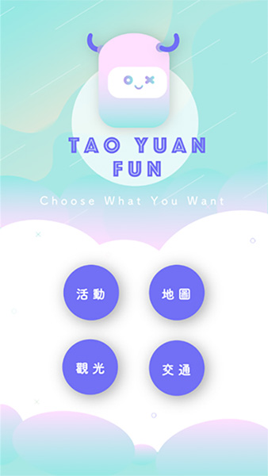
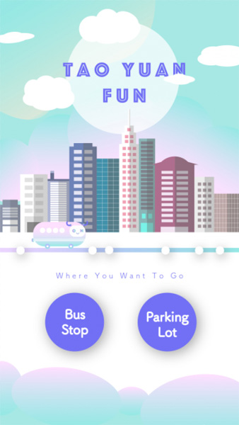
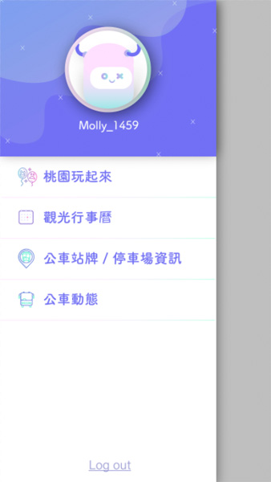

MY WORKS
Taoyuan Fun

趣 桃 園
為促進桃園觀光的旅遊APP
Programming Language :
專案介紹
本專案之目的在於配合桃園當地特色景點，開發一款結合當季活動、景點、交通、地圖等功能的將APP，使用者在遊玩過程中遇到需要查公車或附近停車場資訊時，抑或是需要用到地圖來找景點時，不必開啟其他APP去尋找資訊，同時也顯示「桃園行事曆」供使用者查看目前當季的特有活動，讓使用者在旅途中能暢快的遊玩。
▪ 使用者進入主選單可選擇查看當季活動、觀光景點、旅遊地圖或交通資訊。
▪ 觀光景點頁面中可查看部落客推薦的旅遊行程，使用者若喜歡可依據推薦行程遊玩當地景點。
▪ 在旅遊途中需查閱交通資訊時，可選擇查看景點附近的停車場其付費規則等資訊，或利用APP尋找附近公車站牌，即時查看公車動態。
實際結果
趣桃園 使用者進入主選單
趣桃園 公車動態及停車場選單
趣桃園 會員管理選單
